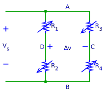
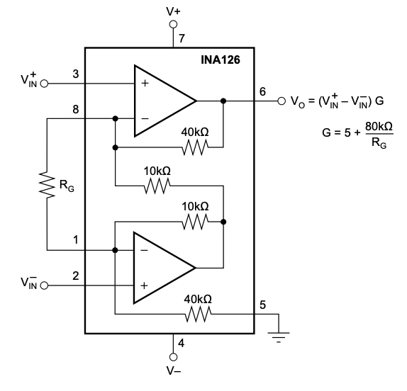

Circuit¶
Load Cell¶
Imagine a conductive rubber band. If you pull on it, it gets longer and narrower. Now current must take a more arduous path, and just like traffic on a congested highway, slows down. Hence the resistance of the stretched rubber band increases.
Strain gauges are not made of rubber but work similarly. They are used to measure distortion in cars, airplanes, buildings, bridges; they are quite versatile.
Load cells consist of our strain gauges attached to a metal bar (image credit: Sparkfun):

Many commercial scales are based on load-cells. We’ll use one that looks like this:

You can get them online from many sources. I suggest you get one with a weight rating or 1kg or less - unless you want to get a workout lifting weights.
The bending of the load cell is imperceptibly small, even with the full rated weight applied. We need to build a very sensitive circuit to ovserve it.
Readout Circuit¶
Reading out a load cell-the amount it bends and hence the force applied to it-is simple. Electrically the four strain gauges are just resistors. Arrange them in a “bridge configuration”, paring gauges in tension and compression like so:

\(V_s\) is the supply voltage (e.g. 3.3V, available from the micrcontroller breakout board) and \(\Delta v\) the output voltage.
With no force applied, all resistors are (nominally) equal and \(\Delta v=0\). With force applied, the values of \(R_1\) and \(R_4\) increase and \(R_2\) and \(R_3\) decrease. Consequently \(\Delta v\) increases proportional to \(V_s\) and the applied force. If you apply force in the other direction \(\Delta v\) goes negative.
Amplifier¶
A problem with this circuit is that \(\Delta v\), even for the maximum rated force applied to the load cell, is very small, millivolts. Microcontrollers cannot accuratelyl measure such small voltages. Hence we need to first amplify it.
Instrumentation amplifiers are ideal for this purpose. They take a (small) voltage at the input. The output the input voltage multiplied with a gain factor G that is set with a resistor. For example, if G=100 a 1mV input results in 100mV at the output.
We’ll use an INA126, primarily since it operates down to 2.7V and hence can be powered from the same 3.3V supply as the microcontroller. Unlike many newer parts, it is available in a dual inline package and therefore breadboard compatible.
Here is the wiring diagram from datasheet:

Resistor \(R_G\) sets the gain. I use 180Ohm, which translates to a gain of approximately 450. The INA126 can go up to a gain of 10,000-try different values to see what works best with your load cell and microcontroller.
Like most amplifiers, the INA126 takes both a positive (V+) and negative (V-) supply. The positive one we get from the microcontroller breakout board. But what about the negative supply? Rather than dealing with laboratory supplies or batteries, let’s generate it ouselves.
Use two equal sized resistors in series to generate 1.65V from the 3.3V supply. Then connect that to ground (pin 5 of the INA126). The “real” ground (0V) from the breakout board goes to V- (pin 4) and the 3.3V supply is tied to V+ (pin 7). Just remember that the output of the INA126 for \(\Delta v=0\) is not zero but 1.65V.
An updated circuit is shown below. \(V_\textrm{ref}\) is the 1.65V midpoint voltage produced by the divider \(R_5\) and \(R_6\). Connect it to ground (pin 5) of the INA216. Also do not forget to connect the gain setting resistor, \(R_G\) (not shown in the diagram).

ADC¶
The output from the INA126 (and the load cell) is an analog voltage. The microcontroller works with digital signals. Hence this voltage must be converted to a digital number.
Many microcontrollers have ADCs (Analog-to-Digital Converters) built-in. The ADC in the ESP32 isn’t particularly good (actually, pretty awful would be a better term), but ok for a simple demo.
The Adafruit Huzzah32 makes five ADC channels available, marked blue in the diagram below:

Connect the output from the INA126 to ADC3 and \(V_\textrm{ref}\) to ADC6. You can use different ADC pins, just remember to change the pin number in the code.